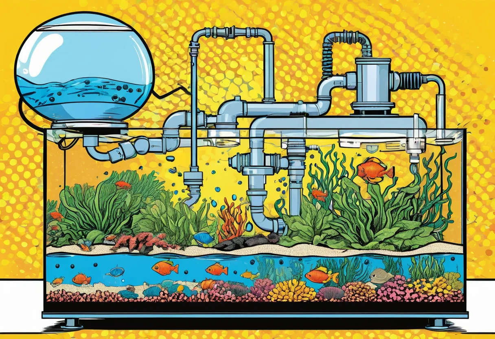
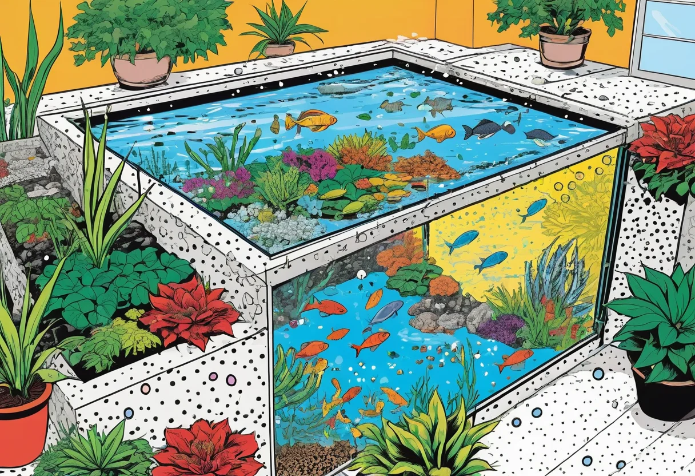

Strömung im Aquarium – Pumpen, Wellen und die richtige Wasserbewegung
Die Strömung im Aquarium wird häufig unterschätzt, ist aber ein entscheidender Faktor für ein gesundes Becken. Sie verteilt Wärme und Nährstoffe gleichmäßig, versorgt die Pflanzen mit CO₂, transportiert Sauerstoff zu Bodenbewohnern und verhindert Totwasserzonen, in denen Fäulnis und Schadstoffe entstehen. In diesem Artikel erfährst du alles über die verschiedenen Arten der Wasserbewegung, die richtige Strömungspumpe und die optimale Einrichtung für dein Aquarium.
Warum ist Strömung so wichtig?
In der Natur gibt es kaum stehende Gewässer. Selbst ruhig wirkende Seen haben eine Grundströmung, und Flüsse sind durch ständige Bewegung geprägt. Fische und Pflanzen haben sich an diese Bedingungen angepasst. Im Aquarium sorgen Strömungspumpen und Filterausströmungen für die notwendige Wasserbewegung, die mehrere lebenswichtige Funktionen erfüllt.
Eine gute Strömung sorgt dafür, dass die Wassertemperatur im gesamten Becken gleich ist – ohne Kaltwasserzonen am Boden oder heiße Stellen an der Oberfläche. Sie transportiert Nährstoffe und CO₂ zu den Pflanzen, verhindert Algenwachstum an totwasserzonen und spült Fischausscheidungen in Richtung Filteransaugung. Die Oberflächenbewegung fördert zudem den Gasaustausch: Sauerstoff gelangt ins Wasser, und CO₂ wird an die Raumluft abgegeben.
Besonders wichtig ist die Strömung für Bodenbewohner wie Welse und Garnelen. Sie sind auf sauerstoffreiches Wasser angewiesen, das durch eine gute Zirkulation auch in Bodennähe ankommt. Ohne ausreichende Strömung können die Filterbakterien im Bodengrund keine ausreichende Sauerstoffversorgung erhalten, was zu Fäulnis und Faulgasen führt.


Strömungsarten und ihre Wirkung
Verschiedene Aquarienbewohner und Einrichtungsstile benötigen unterschiedliche Strömungsintensitäten. Grundsätzlich unterscheidet man mehrere Strömungsarten:
Gleichmäßige Grundströmung
Eine moderate, gleichmäßige Strömung, wie sie von einem Außenfilter oder einer sanften Strömungspumpe erzeugt wird. Sie verteilt Wärme und Nährstoffe gleichmäßig und ist für die meisten Gesellschaftsbecken ideal. Der gesamte Wasserkörper wird sanft bewegt, ohne dass die Fische gegen die Strömung ankämpfen müssen.
Intervall- oder Wellenströmung
Eine Strömung, die sich periodisch ein- und ausschaltet oder zwischen verschiedenen Intensitäten wechselt. Moderne Strömungspumpen verfügen über Wellenmodi, die natürliche Gezeitenströmungen imitieren. Diese wechselnde Belastung fördert die Bewegung der Fische, verhindert Gewöhnungseffekte und transportiert Nährstoffe besonders effektiv.
Starke Strömung für Biotopbecken
In Aquarien, die asiatische Gebirgsbäche oder afrikanische Flussläufe nachbilden, wird eine starke, gerichtete Strömung benötigt. Hier leben spezialisierte Fische wie Saugschmerlen, Störwelse oder Flussbarsche, die strömungsreiche Gewässer bevorzugen. Diese Becken benötigen leistungsstarke Pumpen mit Strömungsdüsen.
Sanfte Oberflächenbewegung
Eine leichte Bewegung der Wasseroberfläche ist in jedem Aquarium notwendig, um den Gasaustausch zu gewährleisten. Ein spiegelglatter Wasserfilm verhindert den Sauerstoffeintrag und führt zu Sauerstoffmangel. Schon ein sanft plätschernder Filterauslass reicht meist aus, um die Oberfläche in Bewegung zu halten.
Die richtige Strömungspumpe auswählen
Die Wahl der passenden Strömungspumpe hängt von mehreren Faktoren ab:
Förderleistung (Durchfluss)
Die Durchflussrate wird in Litern pro Stunde (l/h) angegeben. Als Faustregel gilt:
- Gesellschaftsbecken mit Pflanzen: 3–5-faches Beckenvolumen pro Stunde (z. B. 1500–2500 l/h bei 500 Litern).
- Stark bepflanzte Aquarien mit CO₂: 2–4-faches Volumen, um CO₂ nicht auszutreiben.
- Diskusbecken oder ruhige Biotope: 2–3-faches Volumen für sanfte Strömung.
- Strömungsbecken oder Flussbiotope: 10–20-faches Volumen für kräftige Wasserbewegung.
Verstellbare Durchflussmenge
Pumpen mit stufenloser Durchflussregelung sind empfehlenswert, da sie eine flexible Anpassung an die Bedürfnisse der Bewohner ermöglichen. Du kannst die Strömung je nach Tageszeit oder Einfahrphase reduzieren oder erhöhen.
Wellenmodus und Steuerung
Moderne Strömungspumpen bieten verschiedene Betriebsmodi: Konstantmodus, Wellenmodus, Futtermodus und intermittierende Modi. Gesteuert werden sie meist über eine Fernbedienung oder per App. Diese Funktionen sind besonders in Aquascaping- und Riffaquarien beliebt, aber auch in Süßwasseraquarien sinnvoll.
Größe und Montage
Achte auf die Größe der Pumpe in Relation zu deinem Becken. In einem 60-cm-Becken wirkt eine große Strömungspumpe schnell unproportional. Es gibt kompakte Modelle mit Saugnapfhalterung, die unauffällig an der Rück- oder Seitenscheibe montiert werden. Magnet- oder Klemmhalterungen sind ebenfalls erhältlich.
🛒 Empfohlene Produkte
Strömung und Pflanzenwachstum
Die richtige Strömung ist für das Pflanzenwachstum essenziell. Durch die Wasserbewegung werden CO₂, Nährstoffe und Spurenelemente ständig an die Blattoberflächen transportiert. Ohne ausreichende Strömung entstehen an den älteren Blättern Mikrozonen mit verbrauchtem Wasser, in denen die Nährstoffaufnahme zum Erliegen kommt.
Zu starke Strömung kann jedoch schaden: Sie verbiegt und beschädigt weiche Pflanzen, verhindert die Teppichbildung von Bodendeckern und treibt CO₂ zu schnell aus dem Wasser aus. Ein ausgewogenes Verhältnis ist der Schlüssel. Beobachte deine Pflanzen: Winken sie sanft in der Strömung, ist alles optimal. Werden sie flachgedrückt oder aus dem Boden gerissen, reduziere die Strömungsstärke.
In stark bepflanzten Aquarien mit CO₂-Düngung solltest du darauf achten, dass die Strömung nicht direkt von der CO₂-Diffusor-Blase zur Wasseroberfläche zeigt. Sonst entweicht das teure CO₂ ungenutzt in die Luft. Besser ist eine Zirkulation, die das CO₂-haltige Wasser zunächst durch den Pflanzenbestand führt.
Strömungsoptimierung durch Einrichtung
Nicht nur die Pumpe, sondern auch die Einrichtung des Aquariums beeinflusst die Strömung. Mit geschickter Platzierung von Steinen, Wurzeln und Pflanzen kannst du die Wasserbewegung gezielt lenken:
- Steine und Wurzeln als Strömungsbrecher: Große Dekorationselemente erzeugen Strömungsschatten, in denen ruhige Zonen entstehen. Nutze dies, um Rückzugsorte für strömungsempfindliche Fische zu schaffen.
- Pflanzen als Strömungsdämpfer: Dichte Pflanzenhintergründe aus Vallisnerien oder Hygrophila bremsen die Strömung ab und filtern Schwebstoffe aus dem Wasser.
- Position der Pumpe: Platziere die Strömungspumpe auf der gegenüberliegenden Seite des Filterauslasses, um eine möglichst vollständige Zirkulation zu erreichen. Richte sie leicht schräg zur Wasseroberfläche, um eine kreisförmige Strömung zu erzeugen.
- Richtdüsen und Ausströmer: Viele Außenfilter werden mit Richtdüsen oder Sprührohren geliefert, die eine feine Verteilung des Rücklaufs ermöglichen. Ein Sprührohr über die gesamte Beckenbreite verteilt den Rücklauf gleichmäßiger als eine einzelne Düse.
Strömung für spezielle Bewohnergruppen
Garnelen und Krebse
Garnelen und Zwergkrebse bevorzugen moderate Strömung mit ruhigen Rückzugsbereichen. Stark turbulente Strömung stresst die Tiere und erschwert die Häutung. Richte die Strömungspumpe so aus, dass die Hauptströmung oberhalb des Bodengrundes verläuft – Garnelen halten sich meist am Boden auf.
Diskus und Skalare
Diese südamerikanischen Cichliden sind langsame, elegante Schwimmer und mögen keine starke Strömung. In Diskusbecken wird oft auf zusätzliche Strömungspumpen verzichtet – der Filterrücklauf reicht aus. Bei größeren Becken ist eine sanfte Strömungspumpe mit reduzierter Leistung akzeptabel.
Saugwelse und Schmerlen
Viele Harnischwelse (L-Welse), Otocinclus und Schmerlen leben in der Natur in strömungsreichen Gewässern. Sie benötigen sauerstoffreiches Wasser mit einer guten Grundströmung. Starke, sporadische Strömungsstöße (Wellenmodus) fördern ihr natürliches Verhalten.
Häufige Fehler bei der Strömungsgestaltung
- Zu starke Strömung im falschen Bereich: Eine zu stark auf den Boden gerichtete Strömung verwirbelt den Bodengrund und schädigt die Pflanzenwurzeln.
- Totwasserzonen ignorieren: Hinter großen Dekoelementen und in Beckenecken entstehen oft Zonen ohne Wasserbewegung. Überprüfe mit einem Faden oder mit feinen Partikeln, ob wirklich das gesamte Becken durchströmt wird.
- Oberflächenbewegung vernachlässigen: Ein stehender Wasserfilm an der Oberfläche führt rasch zu Sauerstoffmangel. Die Oberfläche sollte stets leicht bewegt sein.
- Falsche Pumpengröße: Ein 2000-Liter-Aquarium mit einer 3000-l/h-Pumpe zu betreiben, die nur auf 30 % läuft, ist ineffizient und verursacht unnötige Wärmeentwicklung. Wähle eine Pumpe, die in etwa deinem Bedarf entspricht.
- Nachts Strömung reduzieren: In der Nacht sinkt der Sauerstoffgehalt durch die Pflanzenatmung. Eine ausreichende Strömung ist dann besonders wichtig. Schalte Strömungspumpen nachts nicht aus – es sei denn, du hast einen speziellen Nachtmodus mit reduzierter, aber nicht unterbrochener Leistung.
Fazit
Die richtige Strömung ist weit mehr als ein Luxus – sie ist eine grundlegende Voraussetzung für ein gesundes Aquarium. Sie sorgt für gleichmäßige Temperatur- und Nährstoffverteilung, verhindert Totwasserzonen, fördert den Gasaustausch und unterstützt das Pflanzenwachstum. Die Wahl der richtigen Strömungspumpe, ihre Platzierung und die strömungsoptimierte Einrichtung erfordern etwas Planung, zahlen sich aber durch vitale Fische und üppig wachsende Pflanzen aus. Beobachte dein Aquarium regelmäßig: Die Fische zeigen dir, ob ihnen die Strömung gefällt.
Weitere Informationen zur technischen Ausstattung findest du in unserem Technik-Überblick und im Filter-Guide.
🛒 Empfohlene Produkte
[ AdSense-Werbefläche ]